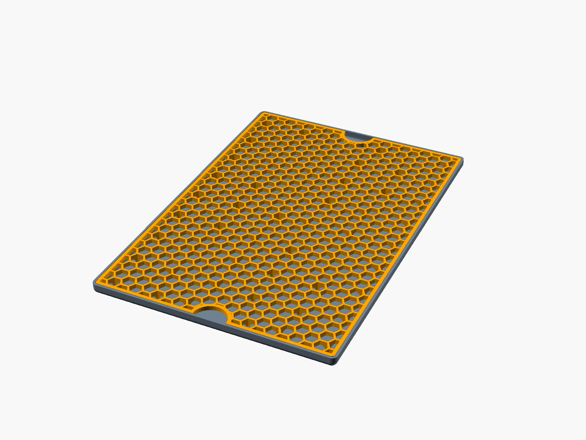
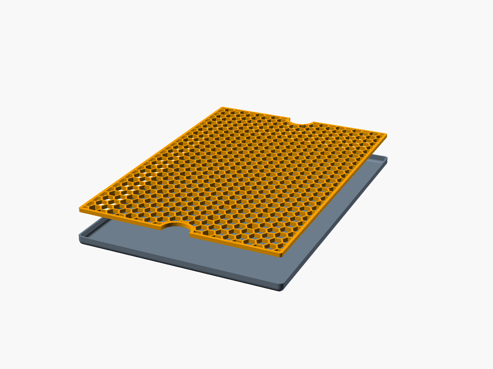
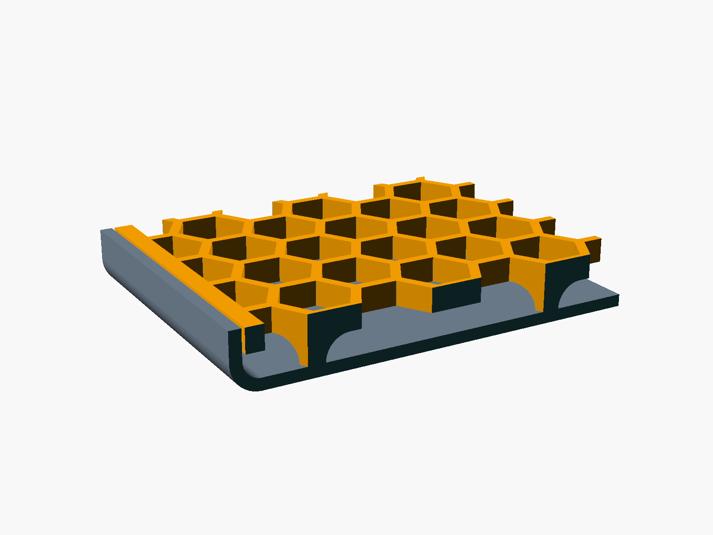
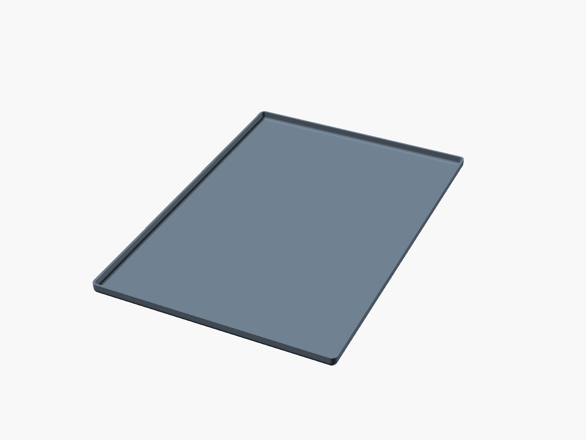
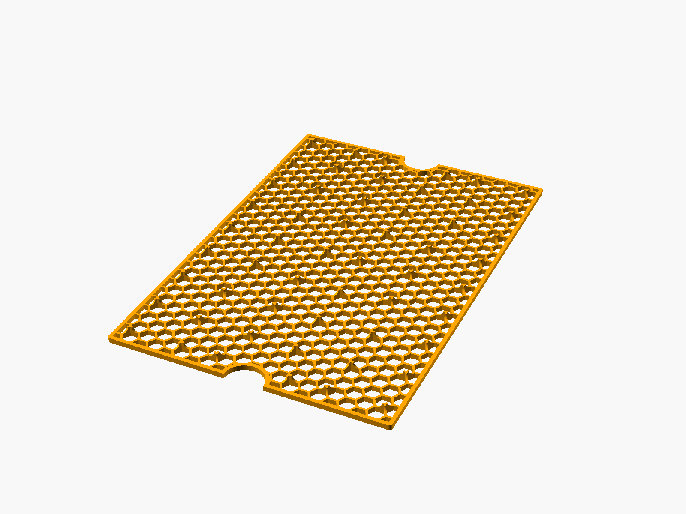

Drip Tray
Generated from drip_tray.scad.











Parameters
| Group | Name | Value | Note |
|---|---|---|---|
| Tray | tray_size | [220, 320, 10] | outer width, length, height |
| Tray | wall | 2 | |
| Tray | corner_radius | 5 | vertical corners and bottom edges |
| Grid | clearance | 0.5 | gap between grid and tray wall, all around |
| Grid | grid_thickness | 4 | hex plate, measured down from the top |
| Grid | rim_width | 3 | solid outline around the hex pattern |
| Grid | hex_radius | 6 | circumradius of one hex hole |
| Grid | hex_web | 1.6 | material between neighbouring hex holes |
| Grid | leg_spacing | 40 | maximum distance between legs |
| Grid | leg_foot | 2 | leg radius where it stands on the tray floor |
| Grid | finger_notches | true | half-circle notch on each short edge to lift the grid out |
| Grid | notch_radius | 15 |
Derived
grid_size = [215, 315, 8]leg_height = 4legs = 54